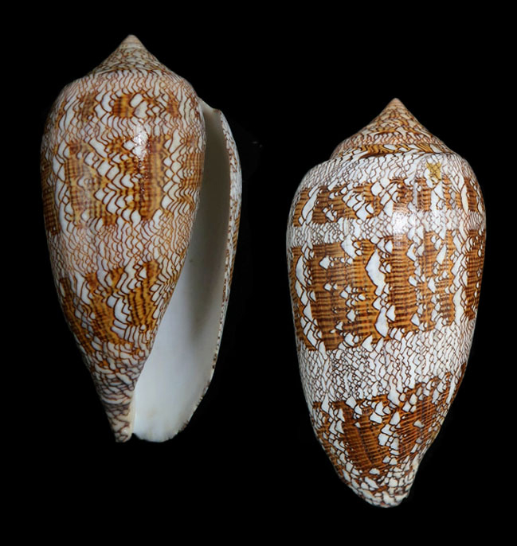

De los autómatas celulares a los modelos sociales
¿Cómo surge este dibujo en una caracola?

El triángulo de Pascal
Cada número surge combinando los dos números que tiene arriba; así los números combinatorios se generan automáticamente.
Una regla es un número binario
Un vecindario de 3 celdas puede tener 8 configuraciones posibles. Un autómata es una regla que asigna a cada celda una respuesta en función del estado de su vecindario. Estas 8 respuestas, leídas como un número binario, dan un número entre 0 y 255.
0 1 0 1 1 0 1 0
64 + 16 + 8 + 2 = 90
128 · 64 · 32 · 16 · 8 · 4 · 2 · 1
Juguemos a evolucionar como un autómata
- ¡Miren! Cada uno mira a sus dos vecinos.
- ¡Cambien! Todos voltean su tarjeta al mismo tiempo.
- Los extremos tienen un vecino imaginario blanco.
¿Qué tipo de regla te tocó?
Las cuatro clases de Wolfram
Partiendo de una fila al azar, todo autómata celular cae en una de cuatro clases.
Todo termina en un mismo estado.
Reglas 0, 8, 32Quedan estructuras simples, fijas o que se repiten.
Reglas 4, 50, 108Patrones desordenados que nunca se repiten.
Reglas 30, 45, 90Estructuras que se mueven, chocan e interactúan.
Reglas 54, 110S. Wolfram, «Universality and complexity in cellular automata», Physica D 10 (1984) 1–35 · S. Wolfram, A New Kind of Science, Wolfram Media, 2002.
Explorador de reglas
El caracol también sigue una regla local
Cada célula del borde de la concha pone pigmento o no según lo que hacen sus vecinas. Así, fila a fila, aparece el dibujo.
El Juego de la Vida
Ahora en un plano. Una celda muerta nace con exactamente 3 vecinas vivas. Una viva sobrevive con 2 o 3. Si no, muere.
Inventado por John H. Conway (1970) y dado a conocer por Martin Gardner en su columna «Mathematical Games», Scientific American, octubre de 1970.
Descanso
Teoría de juegos: la matriz de pagos
Un juego tiene jugadores, estrategias y pagos. La matriz de pagos dice cuántos puntos gana cada jugador según lo que elijan los dos.
- El jugador A elige una fila; el jugador B, una columna.
- En cada casilla, el primer número es lo que gana A y el segundo, lo que gana B.
- Ejemplo: dos conductores se cruzan en una vía. Si los dos van por el mismo lado, ganan 1 cada uno; si no, chocan y ganan 0.
| B →A ↓ | Derecha | Izquierda |
|---|---|---|
| Derecha | 1, 1 | 0, 0 |
| Izquierda | 0, 0 | 1, 1 |
El equilibrio de Nash
Ningún jugador gana más cambiando él solo de estrategia.
Coordinación: dos equilibrios
| B →A ↓ | Derecha | Izquierda |
|---|---|---|
| Derecha | 1, 1 | 0, 0 |
| Izquierda | 0, 0 | 1, 1 |
Cualquier convención sirve, si todos la siguen.
Dilema del Prisionero: un equilibrio
| B →A ↓ | ✓ coopera | ✗ traiciona |
|---|---|---|
| ✓ coopera | 3, 3 | 0, 5 |
| ✗ traiciona | 5, 0 | 1, 1 |
Los dos ganarían más cooperando, pero a cada uno le conviene traicionar.
J. F. Nash, «Equilibrium points in n-person games», Proceedings of the National Academy of Sciences 36 (1950) 48–49.
El Juego de la Coordinación
- A la cuenta de tres, todos muestran un color.
- Ganas 1 punto por cada vecino con tu mismo color.
- Si la mayoría de tus vecinos tiene otro color, en la siguiente ronda cambias a ese color. Con empate te quedas.
¿Cómo alcanzamos convenciones sociales?
¿Por qué todos sabemos que debemos conducir por la derecha?
Convenciones que aparecen solas
El Dilema del Prisionero
| yo \ mi vecino | ✓ coopera | ✗ traiciona |
|---|---|---|
| ✓ coopero | 3 | 0 |
| ✗ traiciono | 5 | 1 |
Los números son mis puntos.
- Juego con cada uno de mis vecinos y sumo mis puntos.
- Miro los puntos de mis vecinos.
- Copio la estrategia del vecino con más puntos, si tiene más que yo.
¿Sobrevive la cooperación?
Para pensar
¿Qué hizo que la cooperación sobreviviera en un caso y no en el otro?
¿Dónde en tu vida hay un barrio cooperador? ¿Y un traidor que se contagia?
¿Una convención mala se puede cambiar?
Reglas locales, patrones globales
Escribe en tu cuaderno una situación de tu vida que sea un dilema del prisionero.
Sigue explorando en casa: